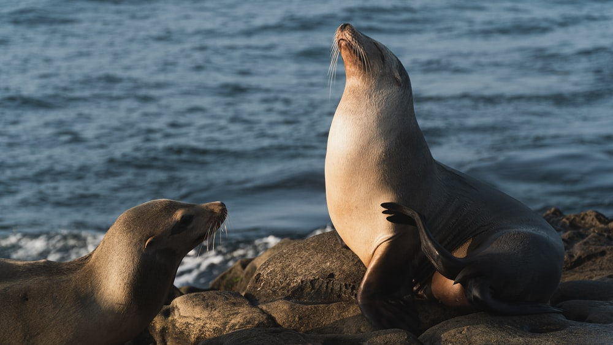

Sea Lion
Over View
External ear flaps, long foreflippers, the ability to walk on all fours, short, heavy fur, and a broad chest and belly distinguish sea lions from other pinnipeds. They belong to the Otariidae family of eared seals, which includes six living species and one extinct species (the Japanese sea lion) in five general.With the notable exception of the northern Atlantic Ocean, their range ranges from the subarctic to tropical waters of the global ocean in both the Northern and Southern Hemispheres.
They live for around 20–30 years on average. A male California sea lion weights about 300 kg and measures 2.4 m (8 ft) in length, while a female weighs 100 kg and measures 1.8 m (6 ft) in length. The Steller's sea lion is the tallest, weighing up to 1,000 kg and reaching a length of 3.0 meters (10 ft). Sea lions eat a lot of food at once, consuming approximately 5–8% of their body weight (roughly 6.8–15.9 kg (15–35 lb) in a single meal. In the ocean, sea lions can attain speeds of about 16 knots (30 km/h; 18 mph) and 30 knots (56 km/h; 35 mph) at their fastest. The Australian sea lion, the Galápagos sea lion, and the New Zealand sea lion are all considered endangered species.
Taxonomy
Walruses and seals are relatives of sea lions. They belong to the Otariidae tribe, which includes the fur seals, and are collectively known as eared seals. Sea lions were formerly classified as part of the Otariinae subfamily, while fur seals were classified as part of the Arcocephalinae subfamily. This distinction was made based on the most distinguishing trait possessed by both the fur seals and the sea lions, namely the thick underfur of the former. Recent genomic data shows that Callorhinus, the northern fur seal's family, is more closely related to certain sea lion species than to Arctocephalus, the other fur seal genus.As a result, several taxonomies have dropped the fur seal/sea lion subfamily distinction.
Despite this, all fur seals share certain characteristics: fur, smaller sizes, longer and farther foraging journeys, smaller and more frequent food species, and greater sexual dimorphism. Sea lions share many characteristics with fur seals, such as coarse, short fur, greater bulk, and larger prey. The differentiation is also useful for these purposes. Fur seals and sea lions belong to the Otariidae family (Order Carnivora), which has 14 species.The traditional division of the family into the Arctocephalinae and sea lion subfamilies is not supported, with the fur seal Callorhinus ursinus possessing a basal relationship to the rest of the family. This is supported by the fossil record, which indicates that around 6 million years ago, this genus split from the line that led to the remaining fur seals and sea lions. Similar genetic divergences between sea lion clades and major Arctocephalus fur seal clades indicate that both groups underwent cycles of rapid radiation at the time they diverged.
Arctocephalus is considered to be the most "primitive" line because of ancient character states like thick underfur and the appearance of double-rooted cheek teeth. Both the sea lions and the surviving fur seal species, Callorhinus, are believed to have diverged from this basal line. Callorhinus diverged around 6 mya, according to the fossil record from the western coast of North America, while sea lions did not diverge until years later, according to fossils from California and Japan.
Interaction with Humans
Cultural exploitation has had a significant effect on South American sea lions. Hunter-gatherers in the Beagle Channel and northern Patagonia significantly decreased the number of sea lions between the late Holocene and the middle of the twentieth century due to their poaching of the animals and exploitation of the species' habitat. Despite the fact that sealing has been banned in many countries, including Uruguay, the population of sea lions continues to decline due to the devastating impact humans have on their habitats. South American sea lions have been foraging at higher tropical latitudes as a result. When fishermen succeed in their endeavors, they significantly reduce the sea lion's food supply, putting the animal in jeopardy. Sea lions may also become hostile and territorial as a result of human activity and outdoor practices. When humans approach a sea lion within 15 meters, the sea lion's vigilance rises as a result of the intrusion. These disturbances have the ability to induce internal stress responses in sea lions, causing them to withdraw, often even abandoning their territories, and reducing the amount of time they spend hauling out.
Humans are rarely attacked by sea lions, although when they get within 2.5 meters of them, it can be very dangerous. A sea lion jumped from the water and fatally mauled a teenager surfing behind a speedboat in a particularly rare assault in Western Australia in 2007. When the girl was saved, the sea lion seemed to be planning a second attempt. The sea lion may have seen the child "like a rag doll toy" to be played with, according to an Australian marine biologist. In recent years, reports of swimmers being bitten on the legs by massive, hostile males have been recorded in San Francisco, where an increasingly large population of California sea lions crowds docks along San Francisco Bay. A sea lion assaulted a 62-year-old man who was boating with his partner in San Diego in April 2015. The man suffered a punctured bone as a result of the attack. In May 2017, a sea lion grabbed a girl's dress and dragged her into the water before fleeing. When the incident occurred, the boy was seated on a pier in British Columbia while visitors were illegally feeding sea lions. She was rescued from the water with minor cuts and given antibiotic prophylactic medication for a seal finger infection caused by a superficial bite.
In Australia and New Zealand, sea lions have also become a popular tourist attraction. The Carnac Island Nature Reserve near Perth, Western Australia, is one of the best places to see sea lions. Over 100,000 people visit this tourist attraction each year, many of them are leisure boaters and travelers who come to see the male sea lions haul out on the beach. They've been dubbed "the secret Galápagos Islands hosting committee" on occasion.